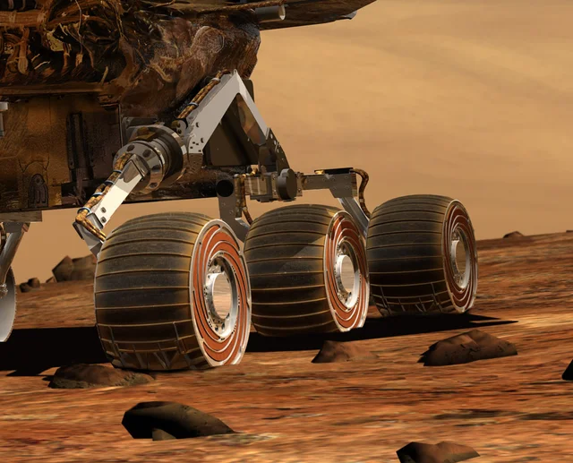
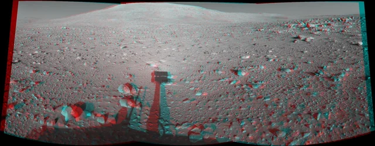
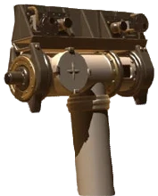
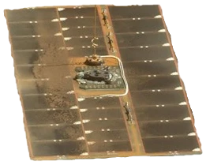
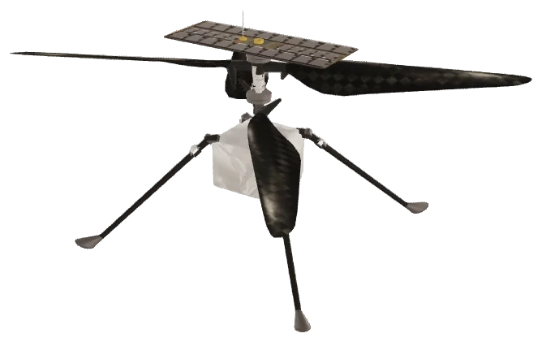

Spirit & Oppy
Hi! I'm Spirit! I can show you the tools I used to study the rocks and soil. With them, I found evidence that water once changed some Martian surfaces. I also helped discover a deposit rich in silica, which may have formed where hot water or steam met the ground.
Rocker-bogie system

My mobility system folded up to fit inside my lander for the trip to Mars. After landing, it unfolded and locked into place, ready to carry me across the surface.
My Pancam takes two pictures of the same landscape from slightly different positions, just like your two eyes do. Put together, they make an anaglyph stereo image like this one, which shows depth on a flat, two-dimensional picture!


Pancam also uses filters to detect light at wavelengths from about 400 to 1,100 nanometers. Some of this light is near-infrared, which our eyes cannot see. Different rocks and soils reflect light differently, and scientists study these patterns to help identify what they are made of.

Ingenuity
Hi! I'm Ingenuity, a small helicopter that traveled to Mars attached to the Perseverance rover. In 2021, I became the first aircraft to make a powered, controlled flight on another planet!

I used my solar panel to charge my batteries. They gave me the energy to fly and to run the heaters that kept me warm at night.
I had four carbon-fiber blades arranged in two rotors. They spun in opposite directions at about 2,400 revolutions per minute. Mars has very thin air, so my rotors had to spin fast to push enough air to lift me.
